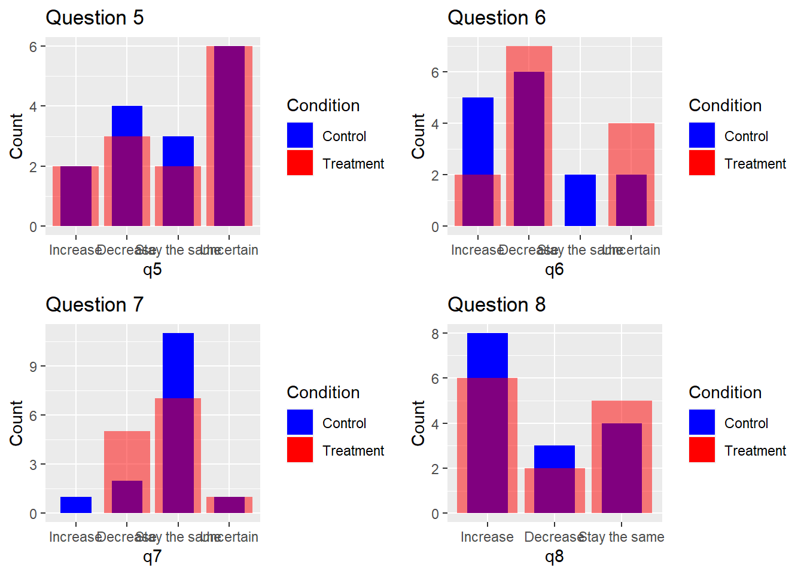
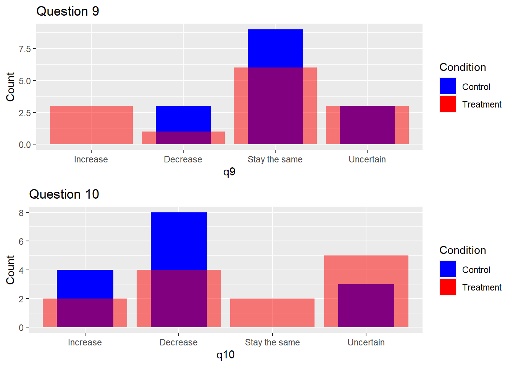

Introduction
Daily decision making is extremely complicated and there amount of information is too much for anyone to process to make a rational decision. When it comes to money people are believed to be more rational and make less irrational mistakes. This is what we set out to test with our experiment. How noise (too much unnecessary information influences our decision). To test this we have created a survey to test with standard questions for control group and modified questions for treatment group. We are looking to see if there is a difference in responses. To test if the difference is significant we use chi-squared test of independence. Quantitative results of tests are presented. Potential for improvement of our methodology is discussed.
Methodology



Results


What determines the test score in our experiment? To answer this question we created dummy variables from education and gender (NAs were committed). Our sample size is small (<30) so we should be cautious interpreting the results. But from a simple OLS regression we see that finishing masters and phd plays a role in getting a higher score. Other variables are not statistically significant.
===============================================
Dependent variable:
---------------------------
score
-----------------------------------------------
control -0.00001
(0.044)
age -0.006*
(0.003)
phd 0.255**
(0.102)
masters 0.175**
(0.066)
bachelors 0.123*
(0.069)
Constant 0.583***
(0.099)
-----------------------------------------------
Observations 28
R2 0.359
Adjusted R2 0.213
Residual Std. Error 0.096 (df = 22)
F Statistic 2.463* (df = 5; 22)
===============================================
Note: *p<0.1; **p<0.05; ***p<0.01But the main question we are testing is whether there is a difference between answers of control and treatment group. To test this hypothesis we use chi-squared test of independence.

Our NULL is that there is no difference in responses between control and treatment groups, alternative is that there is a difference between 2 groups. In the table below we present the results of testing question responses to condition (control or treatment).
test.statistic dof p.value
Question 1 4.044 2 0.132
Question 2 16.206 2 0.000
Question 3 3.348 3 0.341
Question 4 3.877 3 0.275
Question 5 0.201 3 0.977
Question 6 3.906 3 0.272
Question 7 3.047 3 0.384
Question 8 0.456 2 0.796
Question 9 4.480 3 0.214
Question 10 4.379 3 0.223We have found no evidence that increasing noise leads to different responses in control and treatment groups. Overall the difference is not statistically significant for most of the questions, inclusion of noise didn’t have an significant effect on the answers. Question 2 is an exception and its reason for high test statistic is discussed in the next section.
Discussion
In our experiment we treated noise equally and didn’t differentiate between all the possible directions of its effect. This is not very precise because we can’t measure in which direction has our noise pushed respondents.
Questions could be improved by not having multiple potentially correct answers, but one true. This way we can actually see if people deviate from the correct answer when noise is present. In other words, instead of doing a two sided test to see if there is any change we can use one-sided test with framing to push participants to answer a certain way. This will improve the accuracy and help find the effect of certain framing on respondent’s answers.
Question 2 had a mistake and no-one from control group got it right, while many from treatment group guessed it correctly.
In closing, it is important in such experiments to isolate the effect to measure it. In our case we looked for any effect (any change) from the ideally correct answer. While we might see significant difference in the larger sample and having replicated this experiment multiple times, our results don’t show that introducing noise affects responses. In the future experiments we suggest to not look at any effect but try to see if inclusion of certain noise changes the responses.
References
- Jacob Goldin & Daniel Reck, Framing Effects in Survey Research: Consistency-Adjusted Estimators, February 25, 2015 (forthcoming in The American Statistician 2018).
- https://vulstats.ucsd.edu/chi-squared.html
- Bruine de Bruin, Wändi. (2011). Framing effects in survey design: How respondents make sense of the questions we ask.
Experimental instructions
1) Create a separate survey for control and treatment groups.
2) Brief the participants about the survey and its aims.
3) Randomly assign participants to the groups.
The following questions are the same for both groups, except the treatment group had additional text (italicized).
1. You have saved 10000 hryvnias and you plan how you’ll spend them. One option is to put them in the bank with an annual rate of 4% (compound interest rate), how much hryvnias will you have in two years, given that the exchange rate will not change?
10,824
10,800
10,816
10,836
2. You took a credit of 10000 hryvnias with 12% annual to buy an iPhone. You have used this phone a bit and decided to return it, but you still had to pay for credit. How much did you pay in total for the credit?
10,100
11,200
12,000
10,012
3. If you invest $1,000 in a stock that increases by 10% per year and expect that it will be worth 1650.51 in five years, how much will your investment be worth in two years?
$1,210
$1,254
$1,200
$1,220
4. You are saving for retirement and make a first deposit of 10,000$ at a fixed annual rate of 5% (simple interest rate). After the first deposit you don’t add or remove any amount from the bank. Over the next 10 years you expect that the average inflation rate will be zero. In how many years will this deposit become 15,000?
5
10
15
25
5. Below you can see a graph of the inflation rate in Ukraine, which has been on the rise ever since the beginning of war. It has plateaued at a 27% level since October. Having economic and political situations in mind, what will happen with the inflation rate in the next 5 months?

- Increase
- Decrease
- Stay the same
- Uncertain

- Increase
- Decrease
- Stay the same
- Uncertain

- Increase
- Decrease
- Stay the same
- Uncertain
Next, You will see a series of graphs, with changes of stock prices of three companies. You don’t have to identify them. After carefully observing the graph, choose the answer that in your opinion best explains what will happen with stock price in the future period.

- Increase
- Decrease
- Stay the same
- Uncertain

- Increase
- Decrease
- Stay the same
- Uncertain

- Increase
- Decrease
- Stay the same
- Uncertain